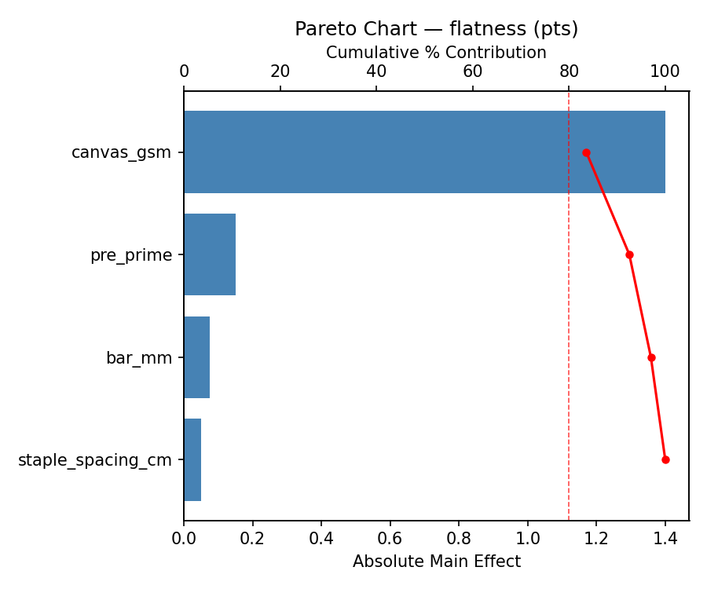
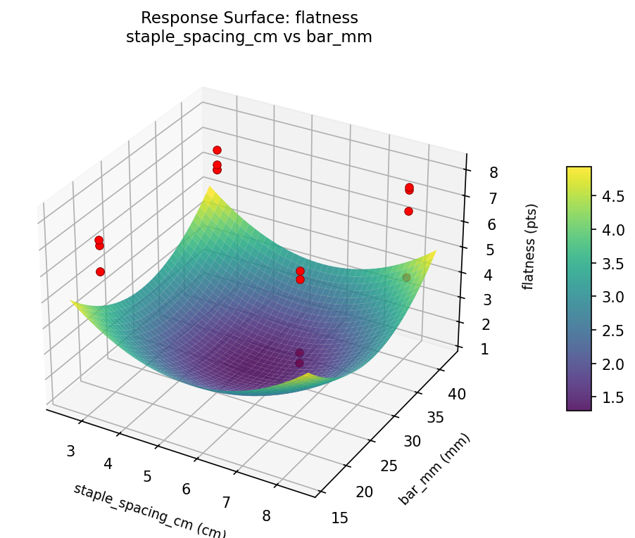
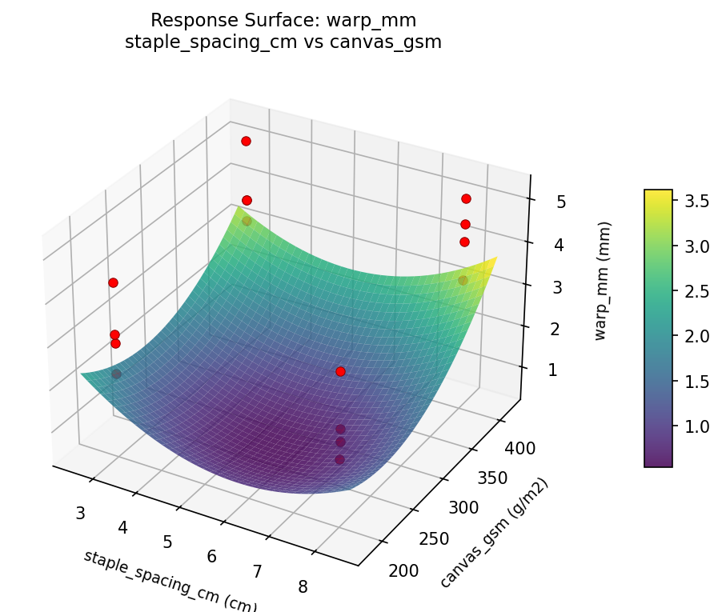

Experimental Setup
Factors
| Factor | Low | High | Unit |
|---|---|---|---|
staple_spacing_cm | 3 | 8 | cm |
bar_mm | 18 | 40 | mm |
canvas_gsm | 200 | 400 | g/m2 |
pre_prime | none | gesso |
Fixed: size = 60x80cm, canvas = cotton_duck
Responses
| Response | Direction | Unit |
|---|---|---|
flatness | ↑ maximize | pts |
warp_mm | ↓ minimize | mm |
Configuration
use_cases/284_canvas_stretching/config.json
{
"metadata": {
"name": "Canvas Stretching Tension",
"description": "Full factorial of staple spacing, stretcher bar thickness, canvas weight, and pre-priming to maximize surface flatness and minimize warping"
},
"factors": [
{
"name": "staple_spacing_cm",
"levels": [
"3",
"8"
],
"type": "continuous",
"unit": "cm"
},
{
"name": "bar_mm",
"levels": [
"18",
"40"
],
"type": "continuous",
"unit": "mm"
},
{
"name": "canvas_gsm",
"levels": [
"200",
"400"
],
"type": "continuous",
"unit": "g/m2"
},
{
"name": "pre_prime",
"levels": [
"none",
"gesso"
],
"type": "categorical",
"unit": ""
}
],
"fixed_factors": {
"size": "60x80cm",
"canvas": "cotton_duck"
},
"responses": [
{
"name": "flatness",
"optimize": "maximize",
"unit": "pts"
},
{
"name": "warp_mm",
"optimize": "minimize",
"unit": "mm"
}
],
"settings": {
"operation": "full_factorial",
"test_script": "use_cases/284_canvas_stretching/sim.sh"
}
}
Experimental Matrix
The Full Factorial Design produces 16 runs. Each row is one experiment with specific factor settings.
| Run | staple_spacing_cm | bar_mm | canvas_gsm | pre_prime |
|---|---|---|---|---|
| 1 | 3 | 40 | 400 | gesso |
| 2 | 8 | 18 | 200 | gesso |
| 3 | 3 | 40 | 200 | gesso |
| 4 | 3 | 40 | 400 | none |
| 5 | 8 | 40 | 400 | none |
| 6 | 8 | 18 | 400 | none |
| 7 | 8 | 40 | 200 | none |
| 8 | 8 | 18 | 200 | none |
| 9 | 3 | 18 | 200 | gesso |
| 10 | 3 | 18 | 400 | none |
| 11 | 8 | 40 | 200 | gesso |
| 12 | 8 | 40 | 400 | gesso |
| 13 | 3 | 40 | 200 | none |
| 14 | 8 | 18 | 400 | gesso |
| 15 | 3 | 18 | 200 | none |
| 16 | 3 | 18 | 400 | gesso |
Step-by-Step Workflow
1
Preview the design
Terminal
$ python doe.py info --config use_cases/284_canvas_stretching/config.json
2
Generate the runner script
Terminal
$ python doe.py generate --config use_cases/284_canvas_stretching/config.json \
--output use_cases/284_canvas_stretching/results/run.sh --seed 42
3
Execute the experiments
Terminal
$ bash use_cases/284_canvas_stretching/results/run.sh
4
Analyze results
Terminal
$ python doe.py analyze --config use_cases/284_canvas_stretching/config.json
5
Get optimization recommendations
Terminal
$ python doe.py optimize --config use_cases/284_canvas_stretching/config.json
6
Generate the HTML report
Terminal
$ python doe.py report --config use_cases/284_canvas_stretching/config.json \
--output use_cases/284_canvas_stretching/results/report.html
Features Exercised
| Feature | Value |
|---|---|
| Design type | full_factorial |
| Factor types | continuous (3), categorical (1) |
| Arg style | double-dash |
| Responses | 2 (flatness ↑, warp_mm ↓) |
| Total runs | 16 |
Analysis Results
Generated from actual experiment runs using the DOE Helper Tool.
Response: flatness
Top factors: canvas_gsm (83.6%), pre_prime (9.0%), bar_mm (4.5%).
Pareto Chart

Main Effects Plot

Response: warp_mm
Top factors: canvas_gsm (57.6%), pre_prime (23.9%), bar_mm (13.0%).
Pareto Chart

Main Effects Plot

Response Surface Plots
3D surfaces fitted with quadratic RSM. Red dots are observed data points.
flatness bar mm vs canvas gsm

flatness staple spacing cm vs bar mm

flatness staple spacing cm vs canvas gsm

warp mm bar mm vs canvas gsm

warp mm staple spacing cm vs bar mm

warp mm staple spacing cm vs canvas gsm

Full Analysis Output
doe analyze
RSM surface: rsm_flatness_staple_spacing_cm_vs_bar_mm.png
RSM surface: rsm_flatness_staple_spacing_cm_vs_canvas_gsm.png
RSM surface: rsm_flatness_bar_mm_vs_canvas_gsm.png
RSM surface: rsm_warp_mm_staple_spacing_cm_vs_bar_mm.png
RSM surface: rsm_warp_mm_staple_spacing_cm_vs_canvas_gsm.png
RSM surface: rsm_warp_mm_bar_mm_vs_canvas_gsm.png
=== Main Effects: flatness ===
Factor Effect Std Error % Contribution
--------------------------------------------------------------
canvas_gsm -1.4000 0.2823 83.6%
pre_prime -0.1500 0.2823 9.0%
bar_mm 0.0750 0.2823 4.5%
staple_spacing_cm -0.0500 0.2823 3.0%
=== Interaction Effects: flatness ===
Factor A Factor B Interaction % Contribution
------------------------------------------------------------------------
staple_spacing_cm canvas_gsm -1.2000 56.5%
bar_mm pre_prime -0.3750 17.6%
staple_spacing_cm pre_prime -0.3500 16.5%
canvas_gsm pre_prime -0.1000 4.7%
bar_mm canvas_gsm 0.0750 3.5%
staple_spacing_cm bar_mm -0.0250 1.2%
=== Summary Statistics: flatness ===
staple_spacing_cm:
Level N Mean Std Min Max
------------------------------------------------------------
3 8 6.5000 0.4899 5.9000 7.1000
8 8 6.4500 1.5784 4.1000 8.1000
bar_mm:
Level N Mean Std Min Max
------------------------------------------------------------
18 8 6.4375 1.2340 4.7000 8.1000
40 8 6.5125 1.0986 4.1000 7.6000
canvas_gsm:
Level N Mean Std Min Max
------------------------------------------------------------
200 8 7.1750 0.7265 5.9000 8.1000
400 8 5.7750 1.0416 4.1000 7.1000
pre_prime:
Level N Mean Std Min Max
------------------------------------------------------------
gesso 8 6.5500 0.9798 4.7000 7.8000
none 8 6.4000 1.3266 4.1000 8.1000
=== Main Effects: warp_mm ===
Factor Effect Std Error % Contribution
--------------------------------------------------------------
canvas_gsm 1.3250 0.2603 57.6%
pre_prime -0.5500 0.2603 23.9%
bar_mm -0.3000 0.2603 13.0%
staple_spacing_cm -0.1250 0.2603 5.4%
=== Interaction Effects: warp_mm ===
Factor A Factor B Interaction % Contribution
------------------------------------------------------------------------
staple_spacing_cm bar_mm 0.5000 23.3%
staple_spacing_cm canvas_gsm 0.4250 19.8%
staple_spacing_cm pre_prime 0.4000 18.6%
bar_mm pre_prime 0.3750 17.4%
bar_mm canvas_gsm -0.3000 14.0%
canvas_gsm pre_prime 0.1500 7.0%
=== Summary Statistics: warp_mm ===
staple_spacing_cm:
Level N Mean Std Min Max
------------------------------------------------------------
3 8 3.5750 0.9192 2.2000 5.2000
8 8 3.4500 1.2118 1.8000 5.2000
bar_mm:
Level N Mean Std Min Max
------------------------------------------------------------
18 8 3.6625 1.2806 1.8000 5.2000
40 8 3.3625 0.7945 2.2000 4.6000
canvas_gsm:
Level N Mean Std Min Max
------------------------------------------------------------
200 8 2.8500 0.8569 1.8000 4.3000
400 8 4.1750 0.7649 3.3000 5.2000
pre_prime:
Level N Mean Std Min Max
------------------------------------------------------------
gesso 8 3.7875 1.1482 1.8000 5.2000
none 8 3.2375 0.9117 2.2000 4.6000
Pareto chart (flatness): use_cases/284_canvas_stretching/results/analysis/pareto_flatness.png
Pareto chart (warp_mm): use_cases/284_canvas_stretching/results/analysis/pareto_warp_mm.png
Main effects (flatness): use_cases/284_canvas_stretching/results/analysis/main_effects_flatness.png
Main effects (warp_mm): use_cases/284_canvas_stretching/results/analysis/main_effects_warp_mm.png
Optimization Recommendations
doe optimize
=== Optimization: flatness ===
Direction: maximize
Best observed run: #1
staple_spacing_cm = 3
bar_mm = 40
canvas_gsm = 400
pre_prime = none
Value: 8.1
RSM Model (linear, R² = 0.1191, Adj R² = -0.2013):
Coefficients:
intercept +6.4750
staple_spacing_cm -0.2250
bar_mm +0.2875
canvas_gsm -0.0375
pre_prime -0.0875
RSM Model (quadratic, R² = 0.7807, Adj R² = -2.2893):
Coefficients:
intercept +1.2950
staple_spacing_cm -0.2250
bar_mm +0.2875
canvas_gsm -0.0375
pre_prime -0.0875
staple_spacing_cm*bar_mm -0.3375
staple_spacing_cm*canvas_gsm -0.7125
staple_spacing_cm*pre_prime +0.0875
bar_mm*canvas_gsm -0.0750
bar_mm*pre_prime +0.2250
canvas_gsm*pre_prime +0.3250
staple_spacing_cm^2 +1.2950
bar_mm^2 +1.2950
canvas_gsm^2 +1.2950
pre_prime^2 +1.2950
Curvature analysis:
bar_mm coef=+1.2950 convex (has a minimum)
staple_spacing_cm coef=+1.2950 convex (has a minimum)
canvas_gsm coef=+1.2950 convex (has a minimum)
pre_prime coef=+1.2950 convex (has a minimum)
Notable interactions:
staple_spacing_cm*canvas_gsm coef=-0.7125 (antagonistic)
staple_spacing_cm*bar_mm coef=-0.3375 (antagonistic)
canvas_gsm*pre_prime coef=+0.3250 (synergistic)
Predicted optimum (from linear model):
staple_spacing_cm = 3
bar_mm = 40
canvas_gsm = 200
pre_prime = gesso
Predicted value: 7.1125
Model quality: Weak fit — consider adding center points or using a different design.
Factor importance:
1. bar_mm (effect: 0.6, contribution: 45.1%)
2. staple_spacing_cm (effect: -0.5, contribution: 35.3%)
3. pre_prime (effect: -0.2, contribution: 13.7%)
4. canvas_gsm (effect: -0.1, contribution: 5.9%)
=== Optimization: warp_mm ===
Direction: minimize
Best observed run: #3
staple_spacing_cm = 3
bar_mm = 40
canvas_gsm = 200
pre_prime = gesso
Value: 1.8
RSM Model (linear, R² = 0.3034, Adj R² = 0.0501):
Coefficients:
intercept +3.5125
staple_spacing_cm +0.2750
bar_mm -0.2250
canvas_gsm +0.3625
pre_prime +0.2250
RSM Model (quadratic, R² = 0.7720, Adj R² = -2.4207):
Coefficients:
intercept +0.7025
staple_spacing_cm +0.2750
bar_mm -0.2250
canvas_gsm +0.3625
pre_prime +0.2250
staple_spacing_cm*bar_mm +0.2375
staple_spacing_cm*canvas_gsm +0.4500
staple_spacing_cm*pre_prime -0.1375
bar_mm*canvas_gsm -0.2750
bar_mm*pre_prime +0.0125
canvas_gsm*pre_prime -0.3500
staple_spacing_cm^2 +0.7025
bar_mm^2 +0.7025
canvas_gsm^2 +0.7025
pre_prime^2 +0.7025
Curvature analysis:
staple_spacing_cm coef=+0.7025 convex (has a minimum)
bar_mm coef=+0.7025 convex (has a minimum)
pre_prime coef=+0.7025 convex (has a minimum)
canvas_gsm coef=+0.7025 convex (has a minimum)
Notable interactions:
staple_spacing_cm*canvas_gsm coef=+0.4500 (synergistic)
canvas_gsm*pre_prime coef=-0.3500 (antagonistic)
Predicted optimum (from linear model):
staple_spacing_cm = 8
bar_mm = 18
canvas_gsm = 400
pre_prime = none
Predicted value: 4.6000
Model quality: Weak fit — consider adding center points or using a different design.
Factor importance:
1. canvas_gsm (effect: 0.7, contribution: 33.3%)
2. staple_spacing_cm (effect: 0.6, contribution: 25.3%)
3. bar_mm (effect: -0.4, contribution: 20.7%)
4. pre_prime (effect: 0.4, contribution: 20.7%)